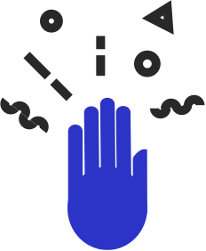

Join Field Day
Join Field Day
You've got superheroes on your team,
But even superheroes need support! Teachers are expected to use new digital tools like games and apps. We provide support teachers need to bring innovation to their classroom.
“Makerspace!” “Game-based Learning!” “Personalized Learning!” You’ve heard the buzzwords—but what’s all the buzz really about? Our first mission: Dive into scholarly articles and learn the science behind the buzzwords.
Once our teacher fellows have acquired some scholarly know-how, it’s time to start the project phase! Teachers will design a semester-long teaching approach, centered on a topic they’re excited about
Each fellowship is organized into a cohort—15-18 super-powered teachers, all working around a single theme. This allows our teachers to work side-by-side with their colleagues and design something awesome together.
So what happens when the teachers bring their projects into actual classrooms? We offer coaching, on-site visits, and online meet-ups throughout the semester. We offer hands on support as teachers bring innovation to their students.
Maybe you’re ready to bring some innovation to your schools. Maybe it’s Personalized Learning, or that awesome Makerspace you’ve been dreaming about. But how can these programs make an impact if teachers aren’t getting the support they need to grow?
Maybe you’re ready to bring some innovation to your schools. Maybe it’s Personalized Learning, or that awesome Makerspace you’ve been dreaming about. But how can these programs make an impact if teachers aren’t getting the support they need to grow?
Out with the old lecture and paper-writing methods. In with interactive media design! Your teachers play an important role in the shift from talking at kids to engaging with kids.
Most likely, “professional” and “development” aren’t your teachers’ favorite words. They probably spend those days lined up in chairs, listening to someone talk—or possibly catching up on sleep. Let’s face it, teachers don’t need more lectures. They need active, ongoing support, and the tools to experiment with new approaches in the classroom.
Nowadays, teachers are really feeling the heat. They face constant pressure to support students in not only the academic content, but digital media, coding and design. This requires more expertise than ever before. Project-based professional development is the sigh of relief that teachers need. It all happens in the classroom, which means teachers are getting the practical support they need, and students are getting a richer, more innovative experience.
The Field Day fellowship is PD that builds connections with the community—kids will be sharing their projects with their friends and families and maybe even making games about their neighborhoods!
Fall 2017
Want to learn more about game-based learning and how to critique games designed for middle school science classrooms? Want to help us identify new topics for science games? Field Day is looking for educators interested in using science games with students in their classroom... Learn More:
Spring 2017
Instead of having students write final papers or produce powerpoint presentations, they can design games to demonstrate their understanding. Teachers will learn how to integrate game design into their social studies curriculum... Learn More:
Spring 2017
Teachers know the classroom better than anyone else. So what would happen if we paired them up with leading researchers, education scholars and a game development studio to make new online games to teach science?... Learn More:
Summer 2017
Science teachers! Do you want to put on a lab coat and join a research lab at a top research institution for a summer? Yes. We thought so! In this fellowship, we partner with the University of Wisconsin Materials Research Science and Engineering Center “Research Experiences for Teachers (RET)” program... Learn More:
Summer 2016
Two teachers, Dave Strong and Dan Rhode, paired up with Field Day to develop 2 new units to teach game design to high school students as part of a collaboration with DPI and WDLC.
Spring 2016
In the Spring of 2016, two teachers at Deforest Middle School partnered with Field Day to pioneer a new social science assignment using digital game making. In the end, 250 middle school students created mobile video games to represent their research about contested issues on the African continent.
Spring 2016
During the spring and summer of 2016, 9 science educators worked together with our design team to develop 9 new online games, the YARD GAMES. These incredible educators offered their real-world expertise to help us understand and test what would really work in the middle-school classrooms and it worked. The games are free and open, being used by over 700 students a day nationally.
Fall 2015 and Spring 2016
For several years our team has been exploring the role mobile devices can play in learning outside the classroom. Working with our three Field Research fellows, we were able to refine the Siftr.org tool and learn how to better inegrate field research activities into formal and informal educational setttings.
Deadline: March 1 - Details Forthcoming
Program Dates: June 12-July 24
Stipend: $6,000 / teacher
Application coming shortly
LARRY MOBERLY
Super hero dreamer
DeForest Middle School
“They stopped asking me, ‘Is this good? Is this what you want?’ Instead, they showed me what they had finished, they were discussing things together, troubleshooting together. I just sat back and reminded them of due dates. They didn’t even need me!”
JULIE BREUNIG
Keeper of creativity
Sauk Prairie Middle School
“It’s not always easy to teach creativity, but it’s important because it leads to higher levels of thinking and processing, learning through trial and error, learning how to fix problems. Today’s project opened up the students to do this. I saw their self-esteem increase when they did something difficult.”
BETH STOFFLET
Educational Mastermind
DeForest Middle School
“It’s important to strike the right balance of help and reassurance, while encouraging students to figure it out on their own. Be prepared for some messy, chaotic, but genuine learning.”
Eric Klopfer
Professor of Science Education and Engineering Systems at MIT
Director, Scheller Teacher Education Program
How much does it cost to not invest in your teachers?
Innovation does cost you something, but ignoring it will cost way more. Teachers end up stagnant or super overwhelmed. Classrooms get stuck in the same old methods, instead of experimenting with all the technology students are so into. The world moves fast, and it’s not gonna wait for your teachers to catch up. Other methods of professional development eat up your money and teachers’ time, without making a real impact. Not sure if the price is worth it? Lack of innovation is already costing your school more than you think.
We know they’re already super duper busy. We work around their schedules. We want to protect teachers’ time and make sure this works for them.
How many more boooorrrrrriiiiiiiinngggggg professional seminars can teachers attend? Teachers need to maintain licensure and earn course credit, but why not have fun and be challenged while doing it? We work to make sure that all the work teachers invest goes directly towards their career development and portfolios.
Interested to hear about what the students made? Our super awesome fellows are here to give you the lowdown!
Teachers from Wisconsin decided to assign games to students who needed bigger challenges.
Field Day Fellowships meet teachers’ professional development needs and requirements.
You’ve got to help your teachers meet requirements, so they can…you know, stay teachers! Our teachers are able to earn course credit towards licensure and local point systems. They can also integrate their experience into their Educator Effectiveness Plan (EEP).
What? School can be fun and inspiring and meet academic standards? Who knew? Today’s standards require teachers to teach design principles, critical thinking, problem solving, research, multiliteracies and all that stuff.